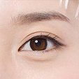
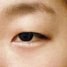

去皮去脂，效果自然
医生会按设计的重睑线切开皮肤并剪下，分离眼轮匝肌暴露睑板，剪去一窄条眼轮匝肌和多余皮下组织。如果脂肪过多则打开眶隔，压迫眼睑使脂肪突出，并予适量切除，然后让脂肪退回眶隔，彻 底止血。后关闭眶隔，将眼睑切口上下缘缝合到睑板上缘的上睑 提肌腱膜上。
双眼皮手术是整形美容外科最长见的手术之一
-
双眼皮：
从视觉上增大了眼的轮廓，增添了眼的立体感，使眼睛显得较大，并使睫毛上翘，给人以生动，传神之感。
-
单眼皮：
皮较厚，睫毛下垂，显的眼睛较小，目光呆滞，缺乏生气；想要眼睛更大更传神，漂亮的眼形双眼皮最关键。